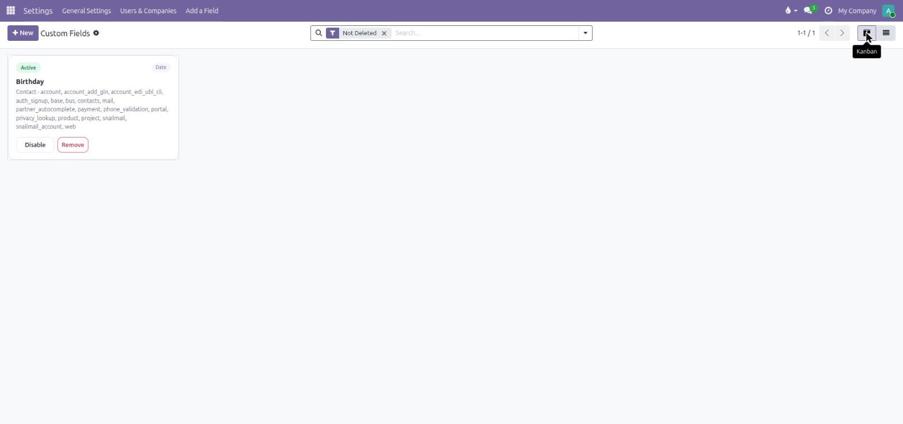
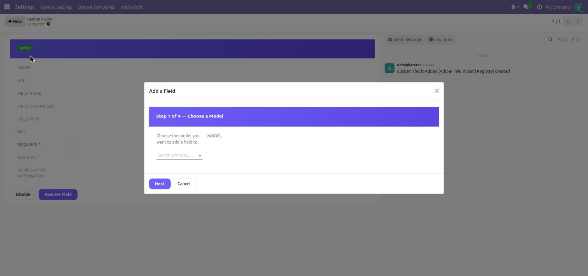
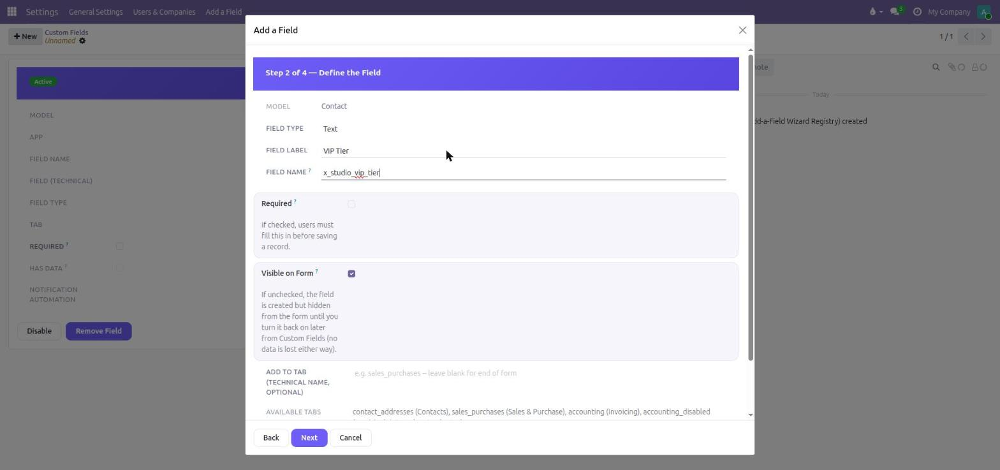
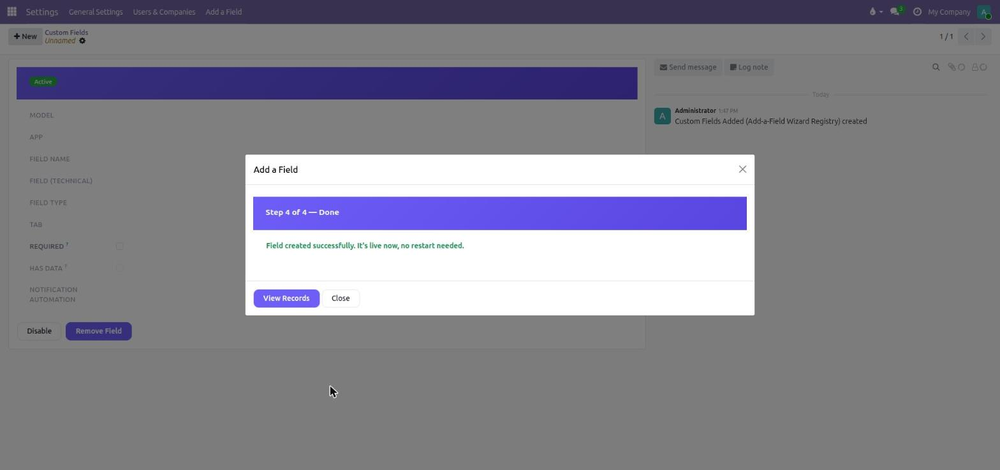
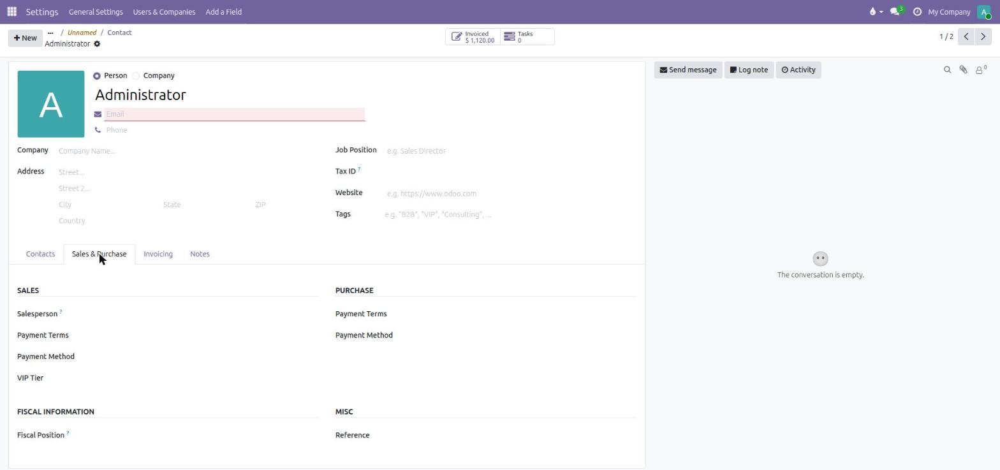

Why this module
Community Edition has no built-in way to add "just one field" without writing a module. This wizard fills that gap using Odoo's own native metadata APIs — the field it creates is indistinguishable from one added by a developer.
Genuinely native
Creates a real ir.model.fields record and a minimal view
inheritance — searchable, exportable, filterable, and visible in Studio
itself if you later upgrade.
Full audit trail
Every field added, updated, enabled, disabled, or removed is logged to chatter on a permanent registry entry — nothing disappears silently.
Safe by default
Removing a populated field, or disabling one with data, always requires an explicit second confirmation. Data is never dropped silently.
How it works
Six screenshots, straight from a real run of the wizard.

Settings → Add a Field
Opens a browsable list of every field created through the wizard — model, app, field name, type, tab, and status — before you create anything new.

Choose a model
Search any installed, non-internal model. A small blocklist keeps you away
from metadata models like ir.model.fields or
ir.ui.view that would cause self-modification chaos.

Define the field
Type, label, and a technical name suggested from the label (fully editable). "Required" and "Visible on Form" are explained in plain language right under each toggle — no guessing what a checkbox does.

Pick a tab, preview the placement
Type the tab you want the field added to (with the real available tabs listed for reference) — it never silently lands in whichever tab happens to come first. The preview shows exactly which group it will join.

Live immediately
No restart, no upgrade. The field is usable the moment you confirm.

Exactly where you put it
"VIP Tier" shows up right in the Sales & Purchase tab's Sales group — because that's where it was actually placed.
Optional: notify someone when it changes
Attach one simple base.automation rule — "notify a user by email
when this field is set to X" — reusing Odoo's own automation infrastructure, not
a parallel rules engine.
Undo path
Every field lives on in its registry entry even after removal — marked "Deleted," chatter history intact — so there's always a record of what was added and when, not just while the field exists.
Find it in Settings
Settings → Add a Field (top menu bar, next to General Settings)
No-Code Field Wizard · Technical/Customization · ERP23